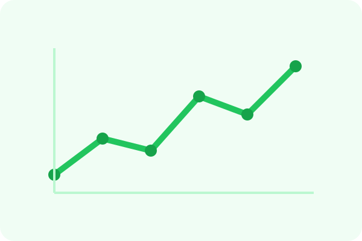

Task categories
- Homework
- Lab work
- Exam preparation
- Lecture review
- Essay writing
These categories reflect the academic focus described in the system concept and make the interface more meaningful for students.
Manage assignments, lectures, and study actions. This page focuses on the task lifecycle of the MVP.
The task list below updates instantly through JavaScript and stores demo data in the browser.
These categories reflect the academic focus described in the system concept and make the interface more meaningful for students.
